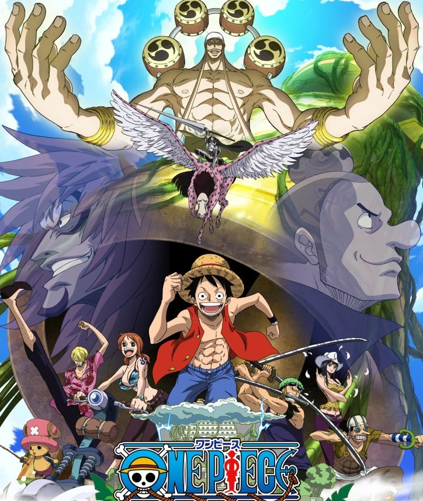

Sky Island Saga
Goat Island Arc

Ruluka Island Arc

Jaya Arc

Skypiea Arc

Kru mencapai pulau di langit, Skypiea, yang dipimpin oleh Enel, sosok yang
menganggap dirinya dewa karena kekuatan petir dari Buah Iblis Goro Goro no Mi. Di
sini, Luffy terlibat dalam perang antara penduduk asli Skypiea dan Enel. Perjalanan
ini membawa kru menjelajahi misteri kuno yang terhubung dengan sejarah dunia serta
peninggalan Abad Kekosongan. Setelah pertarungan klimaks, Luffy mengalahkan Enel,
menyelamatkan pulau dan penduduknya dari kehancuran.
Episode: 153-195
G-8 Arc